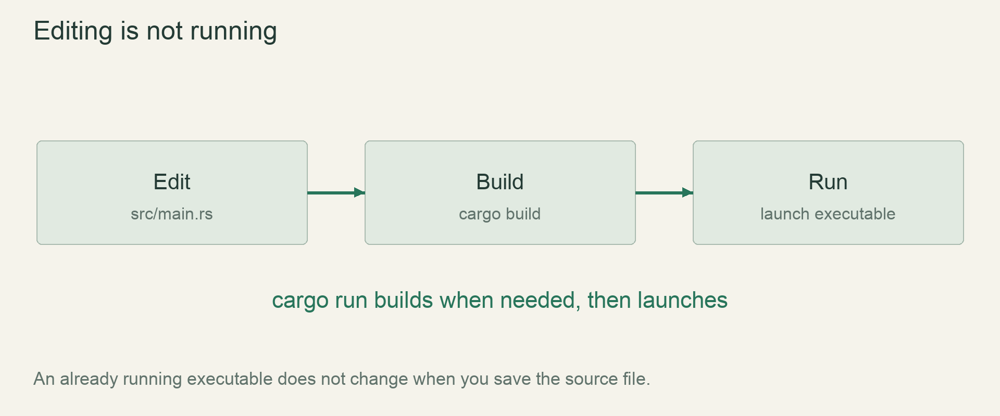

Start / First stepsLesson 06 of 100 · ~5 min reading + build time
Extract a coordinate conversion function
Write and call a small typed function that converts a cell coordinate into a drawing coordinate.
Previously: Choose numeric types and units. Keep that working result available before starting this lesson.
Why we need this now
Once we calculate drawing positions in several places, repeated arithmetic becomes a maintenance risk. A function gives one calculation a name and a contract: what input it accepts and what output it returns. We can discover the function by first noticing the duplication it removes.
Your result: Write and call a small typed function that converts a cell coordinate into a drawing coordinate.

01Find the repeated operation
Both drawing x and drawing y multiply a cell coordinate by four. If those formulas drift apart, the grid stretches differently in each direction. Rather than maintaining two copies, name the operation screen_position. The function is useful because its job is small enough to explain in one sentence: convert one cell coordinate to a drawing coordinate at the current teaching scale.
This is not a reason to create a large utility module yet. First extract the exact repeated computation and keep its inputs explicit. A good first function lets us reason about behavior independently of whatever code happens to call it.
02Read the signature as an interface
fn screen_position(cell: i32) -> f32 declares a function, names one parameter and gives the return type. The parameter binding exists inside the function body. Calling screen_position(12) supplies an argument; inside that call, cell has the value 12. The caller’s variable name need not match the parameter name.
The signature says something testable before we read the body. It accepts an integer coordinate and produces a float. It does not draw a rectangle, change the caller’s coordinate, or open a window. Those would be additional effects and would deserve a different explanation.
03Expressions can be returned directly
In Rust, a function body can end with an expression whose value becomes the return value. Here the final expression is cell as f32 * 4.0 with no semicolon. Adding a semicolon turns it into a statement that discards that expression’s value; the function would no longer return the required f32.
You may also write return cell as f32 * 4.0;, but the final-expression style is common and concise. Do not memorize a rule that semicolons are always bad: statements such as println! calls and assignments still use them. Ask whether this expression is meant to supply a value to the surrounding function.
04Call it from more than one context
Use the function for column and row, then call it with a literal directly. Print the results in a terminal before returning to graphics. This isolates the conversion from window setup and makes testing cheap. Change a coordinate and predict the output; there is no hidden state in this helper.
The fixed 4.0 is acceptable for this tiny teaching slice, but it is a design assumption. When the renderer gains an art buffer and DPI conversion, the boundary may need a richer transform or an explicit scale parameter. A function makes that later change localized; it does not make the current assumption universal forever.
Read → predict → run → change
Walk through the working example
Complete focused example — src/main.rs
Download this worked example ↧
fn screen_position(cell: i32) -> f32 {
cell as f32 * 4.0
}
fn main() {
let column = 12;
let row = 5;
println!("{}, {}", screen_position(column), screen_position(row));
}Read what each part does
- cell is a parameter binding local to each call.
- The helper returns a value rather than drawing it.
- The main function combines two independent conversion results.
Expected result
48, 20Exact version numbers, paths and compiler wording may differ. Compare the behavior and file locations, not incidental output formatting.
Prediction · repair · transfer
Exercises you actually do
Write a prediction or make an attempt before opening a solution. Use the hint if stuck; then compare reasoning and verify with the stated check. A different implementation is fine when it satisfies the same contract.
Parameter names are local
Rename the function parameter to coordinate without changing its caller variables.
Need a hint?
Change the body’s reference to the parameter too.
Worked solution
fn screen_position(coordinate: i32) -> f32 {
coordinate as f32 * 4.0
}The call sites still pass column and row. Argument values, not caller binding names, enter the function.
How to verify your result
The output remains 48,20.
Expose scale as an input
Write a two-parameter version accepting cell: i32 and size: f32.
Need a hint?
Separate parameters with a comma.
Worked solution
fn screen_position(cell: i32, size: f32) -> f32 {
cell as f32 * size
}Call screen_position(12, 4.0). Keep the game’s actual cell size four; another value is only a controlled conversion experiment.
How to verify your result
The same helper converts both coordinates with an explicit scale.
Diagnose the semicolon
Add a semicolon to the final expression and inspect the compiler diagnostic before repairing it.
Need a hint?
The signature still promises f32.
Worked solution
Remove the semicolon from the returning expression, or use an explicit return statement. Explain that the compiler rejected a missing return value, not arithmetic itself.
How to verify your result
You can state what value the function returns and where it comes from.
When it goes wrong
Start with the observed symptom. Change one assumption at a time instead of pasting fixes until the error disappears.
expected f32, found ()
What is happening: The body ended with a value-discarding statement.
Try this: Return the final expression without a semicolon or use return explicitly.
cannot find function
What is happening: The function name is misspelled or its module is not in scope.
Try this: Keep the helper in the same file for now and compare exact names.
argument count mismatch
What is happening: A function signature changed but a call did not.
Try this: Update each caller to satisfy the new parameter list.
Explain it without the example
Why does adding a semicolon to the final return expression change this function?
Reasoning to compare
Without a semicolon the final expression supplies the return value. With a semicolon it becomes a statement; the function then needs an explicit compatible return expression.
Self-check only: test a prediction or ask your tutor if anything still feels arbitrary.
For your YouTube series
Turn the lesson into an episode
Open with the problem or result
Once we calculate drawing positions in several places, repeated arithmetic becomes a maintenance risk. A function gives one calculation a name and a contract: what input it accepts and what output it returns. We can discover the function by first noticing the duplication it removes.
Teach in this order
- Find the repeated operation
- Read the signature as an interface
- Expressions can be returned directly
- Call it from more than one context
Record this demonstration
Write and call a small typed function that converts a cell coordinate into a drawing coordinate.
Close with what the viewer can now explain
Explain the result without reading the code, make one predicted change, then show the observed result.
A lesson can span several recordings. The episode beats are a teaching outline, not a claim that every viewer learns at the same speed.
Finish with evidence
The function returns 48.0 for input 12 and 20.0 for input 5.
Make one small variation without copying: predict it, run it and explain any difference. On another day, repeat one exercise from memory before starting the next lesson. Ask your tutor about any step you can execute but cannot explain.
This is an attempt marker, not a grade. Learning records are written only after demonstrated understanding.
Primary sources for this lesson
Use sources to verify the mechanism. The lesson itself supplies the instructions; the links are not a substitute for teaching them.